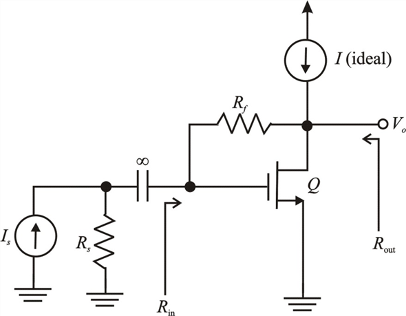

Calculate the input resistance of the amplifier.
Substitute for  and for
and for  .
.

Thus, the input resistance of the amplifier  is .
is .
Draw the trans-resistance amplifier circuit.

Figure 1
Calculate the input resistance of the amplifier.
Substitute for and for .
Thus, the input resistance of the amplifier is .
Calculate the open loop gain of the amplifier.
The load resistance,
The trans-conductance,
The output resistance,
The feedback resistance,
The source resistance,
Substitute the values in the equation.

Thus, the open loop gain of the amplifier  is
is  .
.
Calculate the feedback factor.
Substitute for  in the equation.
in the equation.
Thus, the feedback factor of the amplifier  is .
is .
Calculate the loop gain of the amplifier.

Thus, the loop gain of the amplifier  is.
is.
Calculate the gain with feedback of the amplifier.
Thus, the gain with feedback of the amplifier  is.
is.
Calculate the output resistance of the amplifier.
Thus, the output resistance of the amplifier  is .
is .
Thus, the input resistance with feedback of the amplifier  is .
is .
Calculate the output resistance with feedback of the amplifier.
Thus, the output resistance with feedback of the amplifier  is .
is .
Calculate the input resistance of the feedback amplifier.
Here,
Substitute the known values in the equation.
Substitute the known values in the input resistance formula.
Thus, the input resistance of the feedback amplifier  is .
is .
Calculate the output resistance as seen by the load.
Simplify further to get the output resistance.
Thus, the output resistance as seen by the load, of the amplifier  is .
is .